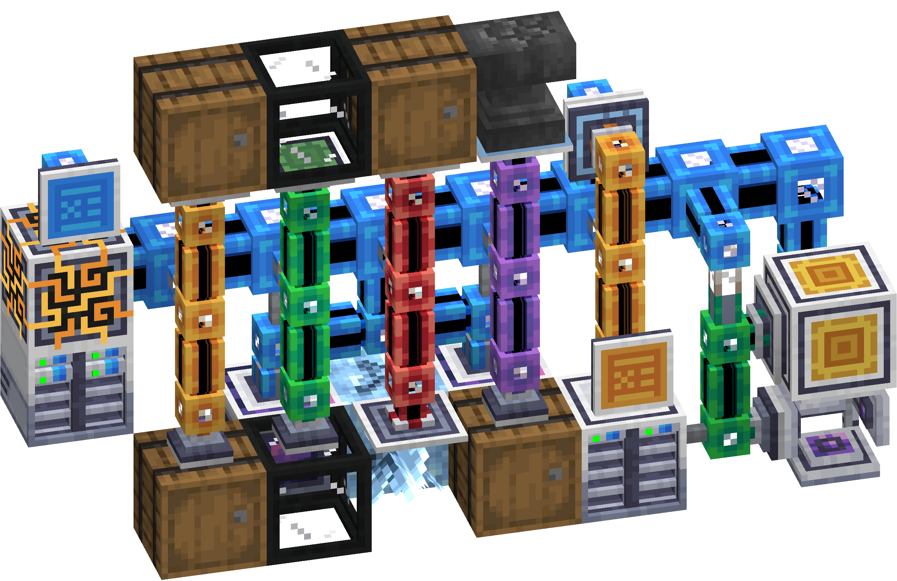

Bem vindo! Este site foi criado com o intuito de informar o básico sobre a mecânica de automatização de recursos do Apllied Energistics 2
Este vídeo é uma introdução à automação no Mod Applied Energistics 2, mostrando a utilização do Annihilation Plane junto com outros itens do Mod.
Automação Básica: Annihilation Plane
Um dos pontos mais importantes para a automação no Applied Energistics 2, que é um aclamdo Mod para o jogo de sucesso Minecraft, é a possibilidade de automaticamente destruir blocos utilizando o Annihilation Plane, que inclusive pode ser encantado para melhores resultados. Ao ser devidamente colocado, energizado e conectado à uma rede de sistema permite a quebra quase instantânea de todos os blocos e imediatamente os envia para dita rede, podendo ser configurado (de forma externa, pois nã possuí interface própia) para apenas fazê-lo para certos items.
Para contruir um Annihilation Plane vocè precisará de:
- 3 Fluix Crystal
- 2 Barras de Ferro
- 1 Annihilation Core, que por sua vez precisará de:
- 1 cristal de quartzo de qualquer tipo
- 1 Fluix dust
- 1 Logic Processor, que é um item básico do Mod
Sobre a questão de encantamentos, a seguir há uma tabela com a diferença com e sem o encantamento Fortuna, que é o mais comum para este item.
Valor
Sem Fortuna
Fortuna I
Fortuna II
Fortuna III
Valor mínimo:
1 item por bloco
1 item por bloco
1 item por bloco
1 item por bloco
Valor médio:
1 itens por bloco
1.33 itens por bloco
1.75 itens por bloco
2.2 itens por bloco
Valor máximo:
1 item por bloco
2 itens por bloco
3 itens por bloco
4 itens por bloco
Cálculo para drop extra:
1×
66% 1×
33% 2×
50% 1×
25% 2×
25% 3×
40% 1×
20% 2×
20% 3×
20% 4×
Todos os valores usam como base um drop padrão de 1, para verificar outros valores e como o encantamento funciona, recomendo acessar a wiki oficial do própio Minecraft aqui.
Alguns itens utilizados em conjunto com o Annihilation Plane:

O própio Annihilation Plane, usado para quebrar blocos automaticamente

Formation Plane, utilizado para colocar
blocos automaticamente

Storage Bus, utilizado como um filtro de
itens em I/O com a rede principal
Em caso de qualquer sugestão ou reclamação, deixe sua mensagem!

Bem vindo! Este site foi criado com o intuito de informar o básico sobre a mecânica de automatização de recursos do Apllied Energistics 2
Este vídeo é uma introdução à automação no Mod Applied Energistics 2, mostrando a utilização do Annihilation Plane junto com outros itens do Mod.
Automação Básica: Annihilation Plane
Um dos pontos mais importantes para a automação no Applied Energistics 2, que é um aclamdo Mod para o jogo de sucesso Minecraft, é a possibilidade de automaticamente destruir blocos utilizando o Annihilation Plane, que inclusive pode ser encantado para melhores resultados. Ao ser devidamente colocado, energizado e conectado à uma rede de sistema permite a quebra quase instantânea de todos os blocos e imediatamente os envia para dita rede, podendo ser configurado (de forma externa, pois nã possuí interface própia) para apenas fazê-lo para certos items.
Para contruir um Annihilation Plane vocè precisará de:
- 3 Fluix Crystal
- 2 Barras de Ferro
- 1 Annihilation Core, que por sua vez precisará de:
- 1 cristal de quartzo de qualquer tipo
- 1 Fluix dust
- 1 Logic Processor, que é um item básico do Mod
Sobre a questão de encantamentos, a seguir há uma tabela com a diferença com e sem o encantamento Fortuna, que é o mais comum para este item.
| Valor | Sem Fortuna | Fortuna I | Fortuna II | Fortuna III |
|---|---|---|---|---|
| Valor mínimo: | 1 item por bloco | 1 item por bloco | 1 item por bloco | 1 item por bloco |
| Valor médio: | 1 itens por bloco | 1.33 itens por bloco | 1.75 itens por bloco | 2.2 itens por bloco |
| Valor máximo: | 1 item por bloco | 2 itens por bloco | 3 itens por bloco | 4 itens por bloco |
| Cálculo para drop extra: | 1× | 66% 1× 33% 2× |
50% 1× 25% 2× 25% 3× |
40% 1× 20% 2× 20% 3× 20% 4× |
Todos os valores usam como base um drop padrão de 1, para verificar outros valores e como o encantamento funciona, recomendo acessar a wiki oficial do própio Minecraft aqui.
Alguns itens utilizados em conjunto com o Annihilation Plane:
O própio Annihilation Plane, usado para quebrar blocos automaticamente
Formation Plane, utilizado para colocar
blocos automaticamente
Storage Bus, utilizado como um filtro de
itens em I/O com a rede principal
Em caso de qualquer sugestão ou reclamação, deixe sua mensagem!
Outras dúvidas consultar: